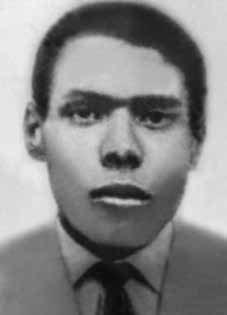

Abílio
Clemente
Filho
CIRCUNSTÂNCIAS DA MORTE
De acordo com os documentos anexados ao processo deferido pela Comissão Especial sobre Mortos e Desaparecidos Políticos (CEMDP) e em conformidade com relato de Maria Amélia de Almeida Teles, da Comissão de Familiares de Mortos e Desaparecidos Políticos, foi localizado no Arquivo Público do Estado de São Paulo, entre outros documentos do extinto Departamento Estadual de Ordem Política e Social de São Paulo (DEOPS-SP), uma ficha escolar de Abílio Clemente Filho. Os registros policiais remontam a obtenção desta ficha na residência de Ishiro Nagami, militante da Ação Libertadora Nacional (ALN), morto em 4 de setembro de 1969 juntamente com Sérgio Corrêa, na capital do estado de São Paulo.
Joana D’Arc Gontijo relatou à Maria Amélia Telles ter escutado os gritos de um jovem durante toda a noite, na mesma data da prisão de Abílio. Para Joana, os gritos cessaram devido ao falecimento do jovem, de quem ela não conseguiu descobrir a identidade mas supõe ter sido Abílio.
Antônio Mentor, deputado estadual de São Paulo, em depoimento anexado ao processo junto à CEMDP, declarou ter conhecido Abílio Clemente Filho em 1968, tendo sido colegas de curso na Unesp e que chegaram a residir na mesma casa. Afirmou que o mesmo era ativista político vinculado à Ação Popular (AP) e acreditava que o desaparecimento se deu por razões políticas.
Abílio desapareceu no dia 10 de abril de 1971, na praia José Menino, em Santos (SP). O relator do caso na CEMDP, Belisário dos Santos Júnior, votou favoravelmente ao deferimento do requerimento, afirmando que: “Também, nesta instância federal, bem considerados todos os elementos de prova colhidos, entendo que Abílio, que tinha militância política, que teve documento apreendido em domicílio de pessoa vinculada a ações armadas, que desapareceu num dia determinado e cujos amigos e família sempre denunciaram como sendo mais uma das vítimas da polícia política, pode e deve ser reconhecido como pessoa desaparecida por motivos políticos. Exigir mais provas, seria desconhecer a história da repressão no Brasil.”
Abílio Clemente Filho permanece desaparecido.
According to the documents attached to the process granted by the Special Commission on Political Deaths and Disappearances (CEMDP) and in accordance with a report by Maria Amélia de Almeida Teles, from the Commission on Relatives of Political Deaths and Disappearances, a school record of Abílio Clemente Filho was located in the Public Archive of the State of São Paulo, among other documents from the extinct State Department of Political and Social Order of São Paulo (DEOPS-SP). Police records date back to this record being obtained at the residence of Ishiro Nagami, a militant of Ação Libertadora Nacional (ALN), killed on September 4, 1969 together with Sérgio Corrêa, in the capital of the state of São Paulo.
Joana D’Arc Gontijo reported to Maria Amélia Telles that she heard the screams of a young man throughout the night, on the same date as Abílio’s arrest. For Joana, the screams stopped due to the death of the young man, whose identity she was unable to discover but she assumes it was Abílio.
Antônio Mentor, state deputy from São Paulo, in a statement attached to the process with CEMDP, declared that he had met Abílio Clemente Filho in 1968, having been course mates at Unesp and that they lived in the same house. He stated that he was a political activist linked to Ação Popular (AP) and believed that the disappearance was due to political reasons.
Abílio disappeared on April 10, 1971, on José Menino beach, in Santos (SP). The rapporteur of the case at CEMDP, Belisário dos Santos Júnior, voted in favor of granting the request, stating that: “Also, in this federal instance, having considered all the evidence collected, I understand that Abílio, who was a political activist, who had a document seized from the home of a person linked to armed actions, who disappeared on a specific day and whose friends and family have always denounced him as being another of the victims of the political police, can and should be recognized as a missing person by for political reasons. To demand more proof would be to ignore the history of repression in Brazil.”
Abílio Clemente Filho remains missing.
Según los documentos adjuntos al proceso otorgado por la Comisión Especial sobre Muertes y Desapariciones Políticas (CEMDP) y de acuerdo con un informe de Maria Amélia de Almeida Teles, de la Comisión de Familiares de Muertes y Desapariciones Políticas, un expediente escolar de Abílio Clemente Filho fue localizado en el Archivo Público del Estado de São Paulo, entre otros documentos del extinto Departamento Estatal de Orden Político y Social de São Paulo (DEOPS-SP). Los registros policiales se remontan a que este expediente fue obtenido en la residencia de Ishiro Nagami, militante de la Acción Libertadora Nacional (ALN), asesinado el 4 de septiembre de 1969 junto con Sérgio Corrêa, en la capital del estado de São Paulo.
Joana D’Arc Gontijo informó a María Amélia Telles que escuchó los gritos de un joven durante toda la noche, en la misma fecha de la detención de Abílio. Para Joana los gritos cesaron por la muerte del joven, cuya identidad no logró descubrir pero supone que era Abílio.
Antônio Mentor, diputado estatal de São Paulo, en declaración adjunta al proceso ante el CEMDP, declaró que conoció a Abílio Clemente Filho en 1968, habiendo sido compañeros de carrera en la Unesp y que vivían en la misma casa. Dijo que era un activista político vinculado a Ação Popular (AP) y creía que la desaparición se debía a razones políticas.
Abílio desapareció el 10 de abril de 1971, en la playa José Menino, en Santos (SP). El relator del caso del CEMDP, Belisário dos Santos Júnior, votó a favor de hacer lugar a la solicitud, afirmando que: “Además, en esta instancia federal, habiendo considerado todas las pruebas reunidas, entiendo que Abílio, que era un activista político, que tenía un documento incautado en la casa de una persona vinculada a acciones armadas, que desapareció en un día determinado y cuyos amigos y familiares siempre lo han denunciado como una más de las víctimas de la policía política, puede y debe ser reconocido como un persona desaparecida por razones políticas. Exigir más pruebas sería ignorar la historia de la represión en Brasil”.
Abílio Clemente Filho sigue desaparecido.